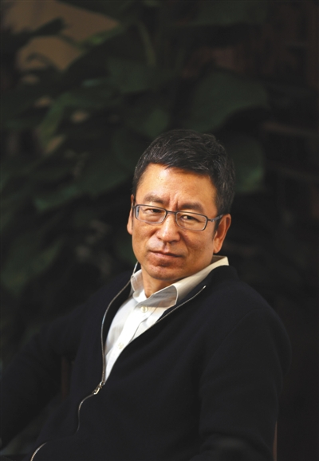
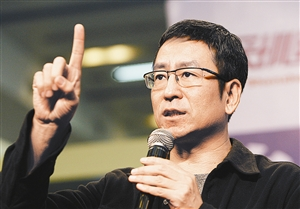

媒体行业精英代表
白岩松

个人简介
白岩松，1968年8月20日出生于内蒙古自治区呼伦贝尔市，中国内地节目主持人、记者、作家，毕业于中国传媒大学新闻系。1993年，白岩松参与创办中央电视台电视新闻杂志节目《东方时空》，并推出了子栏目《东方之子》。1997年，相继参与了香港回归、三峡大坝截流等重大事件的电视直播。1999年参加了澳门回归直播、国庆五十周年庆典转播 。2000年，被授予“中国十大杰出青年”称号 。2003年，开始主持新闻频道的新闻专题节目《新闻周刊》。2009年，获得“华语主持群星会年度终身成就奖”。2010年，获得“优秀播音员主持”奖 。2012年，担任伦敦奥运会开闭幕式的解说 。2016年，获得中央电视台十佳优秀播音员、主持人奖 。
现任中央电视台《新闻1+1》节目评论员、《新闻周刊》节目主持人，中国红十字会副会长 （兼），中国青年志愿者协会副会长。 2018年3月，任政协第十三届全国委员会人口资源环境委员会委员。 2018年享受国务院政府特殊津贴。
励志经历

以白岩松的个人经历来说，有谁能想到一个曾在班里成绩倒数的人，在三十多岁时就已经抱得“中国金话筒奖”，以及后来的“中国十大杰出青年”、长江韬奋奖和中国电视榜 “最佳时评节目主持人”奖呢?近日，白岩松接受中国青年报记者的采访，谈起自己的成长和教子经历。
白岩松小时候对成绩并不是“很在意”，中考时，他只比当时的重点高中录取线高出一分。 就在中考的前几天，他的精力还放在黑泽明的《姿三四郎》和卫冕冠军阿根廷0比1负于比利时的世界杯揭幕战上。那是1982年，李连杰主演的《少林寺》火遍大江南北，白岩松躲在同学家的黑白电视机前面正看得津津有味，却被母亲逮个正着。
这种“不好好上课，不好好学习”的习惯一直保持到高中，整个高一高二，白岩松在老师眼中就是个不折不扣的“差”学生，用白岩松自己的话说，“我最惨的时候，混到全班倒数第二。”直到高三，到了“之前陪你玩的同学都跑去复习”的时候，白岩松才意识到，“是该冲刺了”。
接着，他用了一年的时间，从倒数的位置追到了全班前10。在最后一个学期的模拟考试中，如果不算上外语，他的成绩总分在全班就是“第一、第二”。
聊到这里，白岩松特意强调说：“我不觉得这可以让其他孩子借鉴，因为我是文科，可以完成这个逆转，理科可能很难。”
对文科生来说，不需要做过多的练习，所谓复习就是看书和背书，白岩松的方法是，把语文书、历史书、地理书等所有需要复习的书全都钉在一起，然后计算着日子，在高考前，每天需要看多少页，只要今天看完了，扔下课本就出去玩。
计划一条一条地落实，高考前，白岩松从头到尾看了4遍，“我不认为这是我有毅力的表现，从某种意义上来说，有了计划然后按照计划去做是很简单的事情，因为，当你量化之后，目标感强了，这比你糊里糊涂傻看要轻松得多。”后来，他以全班第8名的成绩考上了当时的北京广播学院(现名中国传媒大学)。
回过头看高考，白岩松曾经对母校的师弟师妹这么说：“为了让别人看到你卓越的才能，你必须先拥有优秀的成绩。如果你说，我现在有很多卓越的才能，只有学习成绩不好，那么，在目前这个年龄段，你就拥有不了让别人接受你的机会。所以，我们要清醒地意识到，在我们读初中、高中、大学时，我们的才能要透过我们的学习成绩去展现出来，尤其在高中阶段。”
谈及自己对孩子的教育，白岩松也常常回忆起自己的成长经历。事实上，像第一次一起抽烟，一起喝酒这样的哥们儿义气，所谓的坏孩子生活离白岩松也不远。他说，“把任何一代孩子中学时代的成长真相，和盘托出在父母面前的话，一定会让他们感到惊心动魄!”有几个人没打过架，有几个人没偷偷地抽过烟、喝过酒，偷偷地单相思过?白岩松认为，要接受这些，只要它没有变成主体，就没问题，不经历这些“好奇”，被改变，怎么可能成长?成长，就是充满好奇、波折，但也在不断地被校正、改变。
就像很多父母对中学生谈感情问题时所说的，“思想可以很复杂，但行为要简单”，白岩松对自己的孩子也是如此，他说，“如果成长永远是一个模式，顺理成章，阳光灿烂，洁白无瑕，那不是成长，那是不合格的文学创作。成长是真实、立体的，也会让人有一些担心，但不出格，守住底线就行。